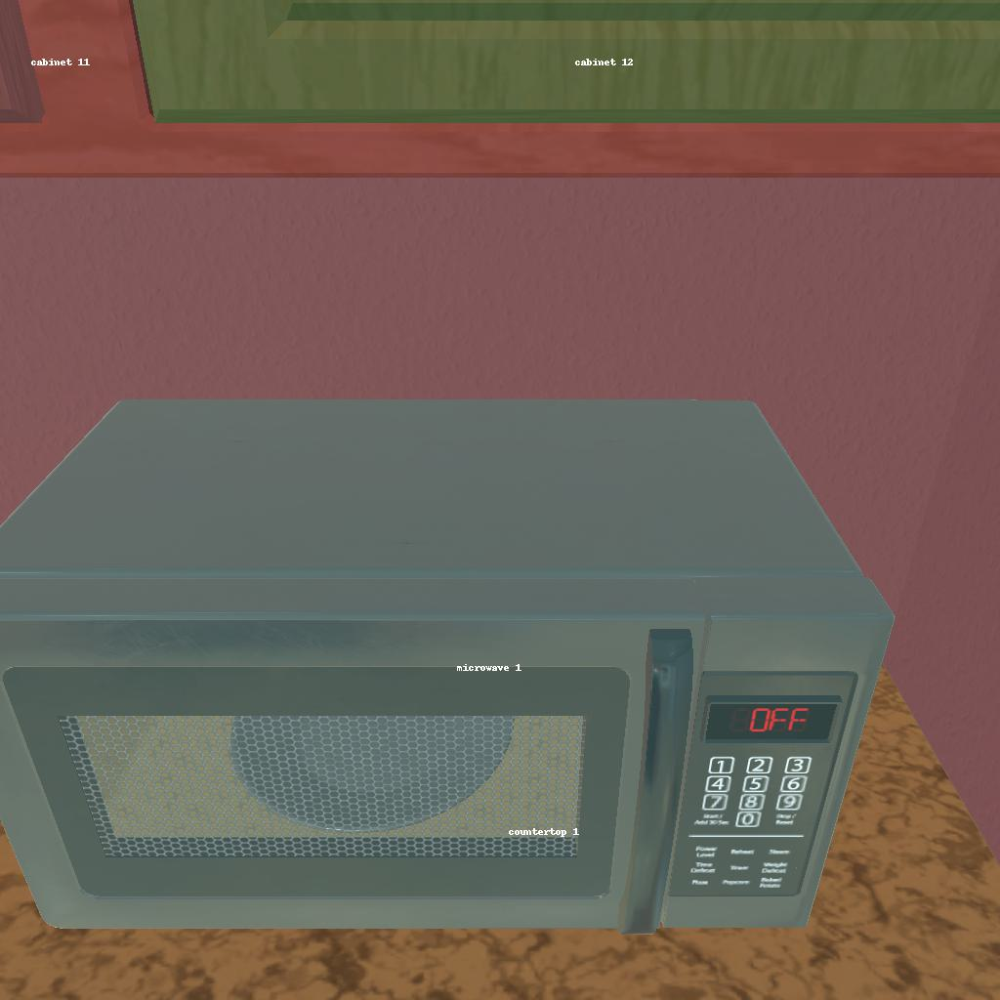

---------------------------------------------------------task: 23---------------------------------------------------------
--------------------------------------------------------------------------------------------------------------------------------------------------------------------
--------------------------------------------------------------------------------------------------------------------------------------------------------------------
Step:--------------------------------------------------------------------------14-------------------------------------------------------------------------------
----------------------------------------
VLM Prompt:
Image1:
**Instruction**
1. Analyze the provided image to identify all visible household objects, focusing on those relevant to the task description "put a hot mug in coffeemachine."
2. Use the analysis of the image and the task hint "The agent must find an object of the desired type, pick it up, go to a microwave, heat the object with the microwave, then find the correct location to place it, and put it down there. The agent does not need to use the microwave button or open the microwave to heat the object, and the agent just needs to do action that is "heat the object with the microwave"." to answer the question: what is the most reasonable action in the choices for the task description "put a hot mug in coffeemachine"?
4. Decide and write the answer using the template: The answer is: (i): , where i is the real number. If there is no desired object in the image, search every place based on **Initial Observation** to find the object. And if no one is exactly correct, choose a similar answer.
**Initial Observation**
You are in the middle of a room. Looking quickly around you, you can see cabinet (1-15), fridge (1), countertop (1-4), drawer (1-4), microwave (1), toaster (1), coffeemachine (1), garbagecan (1), sink (1), stoveburner (1-3), sinkbasin (1)
**Answer Choices**
(1): go to cabinet 1
(2): go to cabinet 2
(3): go to cabinet 3
(4): go to fridge 1
(5): go to countertop 1
(6): go to cabinet 4
(7): go to cabinet 5
(8): go to cabinet 6
(9): go to cabinet 7
(10): go to drawer 1
(11): go to drawer 2
(12): go to cabinet 8
(13): go to drawer 3
(14): go to cabinet 9
(15): go to cabinet 10
(16): go to drawer 4
(17): go to cabinet 11
(18): go to toaster 1
(19): go to cabinet 12
(20): go to cabinet 13
(21): go to cabinet 14
(22): go to cabinet 15
(23): go to countertop 2
(24): go to garbagecan 1
(25): go to countertop 3
(26): go to countertop 4
(27): go to sink 1
(28): go to stoveburner 1
(29): go to stoveburner 2
(30): go to stoveburner 3
(31): go to sinkbasin 1
(32): open microwave 1
(33): close microwave 1
(34): examine microwave 1
**Answer**
Let's think step by step by following the instructions.
----------------------------------------
----------------------------------------
Original Response:
The task is to put a hot mug in the coffeemachine. To accomplish this, the agent must find a mug, heat it in the microwave, and then place it in the coffeemachine. In the provided image, we can see a microwave labeled "microwave 1" on "countertop 1". Since the agent does not need to use the microwave button or open the microwave to heat the object, the action of "go to countertop 1" seems the most relevant to the task, as it is the location of the microwave where the agent will heat the mug.
The answer is: (5): go to countertop 1.
----------------------------------------
----------------------------------------
>>> Refine Original VLM Response and Get Pure Action: go to countertop 1
----------------------------------------
-----------------------------------------------------------------
Running time: 11.590447187423706 seconds
Total Money: 8.349600000000006
-----------------------------------------------------------------
-----------------------------------------------------------------
Text Observation:You arrive at loc 4. On the countertop 1, you see a lettuce 1, a peppershaker 1, a soapbottle 1, a butterknife 1, and a spoon 1.
-----------------------------------------------------------------
UNSUCCEED